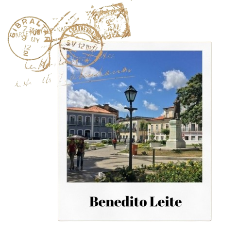

Conheça São Luís!

O centro histórico de São Luís é simplesmente encantador. Suas ruas de
paralelepípedo, casarões coloridos e arquitetura colonial preservada contam a história rica e
fascinante da cidade. Ao passear por suas vielas, é como fazer uma viagem no tempo, voltando aos
tempos áureos do Brasil colonial.
Não deixe de visitar a Praça Benedito Leite, o Palácio dos Leões, a Igreja da
Sé e o Complexo Deodoro, onde você encontrará uma mistura única de cultura, arte e gastronomia. Além
disso, o pôr do sol visto da Avenida Beira-Mar é simplesmente deslumbrante.